Aula 15. Git e GitHub no RStudio
Controle de versão integrado ao ambiente R
Democratização
Esta aula foi construída para mostrar que o R vai muito além da análise estatística. Ele se conecta, ele escala, ele vai para produção.

Essa é a Meguy, minha gatinha linda e a mascote do Café com R.
Acompanhe o Café com R

EM BREVE - NO YOUTUBE
Inscreva-se já no Link.
O que você vai aprender
Módulo 1 - Fundamentos
- O que é
Gite o que éGitHub - Diferenças e complementaridade entre as duas ferramentas
- Benefícios do controle de versão em projetos analíticos
O que você vai aprender
Módulo 2 - Instalação e Configuração
- Instalação do
Git - Registro de conta no
GitHub - Configuração do Git e do Personal Access Token no RStudio
O que você vai aprender
Módulo 3 - Compartilhando e Versionando Projetos
- Método 1: Criar repositório no GitHub e clonar no RStudio
- Método 2: Clonar repositório existente no RStudio
- Método 3: Criar repositório novo direto do RStudio
O que você vai aprender
Módulo 4 - Fluxo de Trabalho com Git no RStudio
- Conceitos essenciais: commit, push, pull, stage, branch
- Painel Git e primeiro commit passo a passo
- Boas práticas e erros comuns
Módulo 1
Contexto de uso - Versionamento de Código
- O versionamento com Git e GitHub deixou de ser uma prática exclusiva de desenvolvedores de software e tornou-se uma competência essencial em ambientes corporativos, acadêmicos e de uso p
- Em equipes de trabalho, a capacidade de rastrear quem alterou o quê, quando e por qual motivo transforma projetos analíticos em ativos auditáveis e colaborativos, eliminando o caos de arquivos duplicados, versões conflitantes enviadas por e-mail e retrabalho causado por alterações não documentadas.
Contexto de uso - Versionamento de Código
- Na academia, o versionamento é um pilar da ciência reprodutível: ao publicar o repositório junto ao artigo ou relatório, o pesquisador permite que qualquer pessoa verifique, reproduza e expanda a análise com precisão, o que aumenta a credibilidade do trabalho e facilita a colaboração entre grupos de pesquisa geograficamente distribuídos.
Contexto de uso - Versionamento de Código
- No uso pessoal, o Git funciona como uma memória técnica estruturada do próprio desenvolvimento profissional. Cada projeto versionado no GitHub é um registro público do raciocínio analítico, das decisões de código e da evolução das habilidades ao longo do tempo, funcionando simultaneamente como portfólio técnico e como proteção contra perda de trabalho.
Contexto de uso - Versionamento de Código
Para quem está construindo carreira em ciência de dados, estatística ou áreas correlatas, manter projetos bem organizados e versionados no GitHub é hoje um diferencial concreto em processos seletivos, pois permite que recrutadores e gestores avaliem não apenas o resultado final, mas a qualidade do processo que o gerou.
Git
Git é um sistema de controle de versão desenvolvido originalmente para permitir que equipes de desenvolvimento trabalhassem de forma colaborativa em grandes projetos de software.
Sua principal função é gerenciar a evolução de um conjunto de arquivos - chamado de repositório - de forma organizada e segura.
Git
Para fins didáticos, o Git pode ser comparado ao recurso de “controlar alterações” de editores como o Microsoft Word, porém com funcionalidades significativamente mais avançadas.
Na ciência de dados, o Git gerencia não apenas código-fonte, mas também bases de dados, documentos, relatórios e scripts - com rastreabilidade completa de cada mudança.
Os verdadeiros ganhos surgem na colaboração em equipe: o Git reduz a complexidade da comunicação entre membros, tornando o processo mais fluido e integrado ao cotidiano de análise.
GitHub
Plataformas como GitHub, GitLab e Bitbucket atuam como serviços de hospedagem para projetos baseados em Git.
Elas permitem armazenar repositórios remotamente, compartilhar projetos e colaborar em tempo real - como uma “nuvem inteligente” para projetos versionados.
GitHub
Esses serviços oferecem interfaces amigáveis, facilitando o uso do Git mesmo para usuários menos experientes.
Diferentes membros da equipe podem sincronizar alterações e propor melhorias com segurança e rastreabilidade.
Mesmo em projetos individuais, a hospedagem remota é recomendada: em caso de conflito ou erro local, a cópia remota permite restaurar versões estáveis rapidamente.
GitHub
O foco deste material será o uso do GitHub, por ser a plataforma mais popular e amplamente suportada. Os conceitos apresentados também se aplicam ao GitLab, Bitbucket e soluções similares.
A distinção entre repositórios públicos e privados pode ser ajustada conforme a necessidade. O GitHub permite a criação de repositórios privados gratuitamente.
Benefícios do uso do Git e GitHub
O uso combinado proporciona acesso facilitado ao código e maior colaboração. Projetos no GitHub podem ser explorados publicamente, clonados ou baixados - qualquer pessoa pode visualizar os arquivos diretamente pela interface web, sem conhecimento prévio em Git.
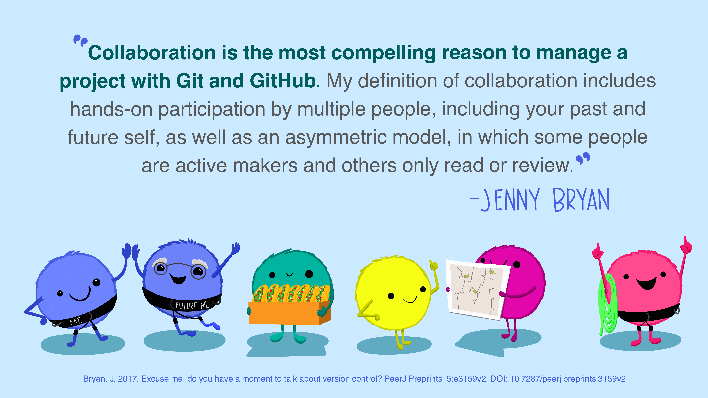
Benefícios do uso do Git e GitHub
Usuários mais experientes podem acompanhar o desenvolvimento de projetos, propor melhorias por meio de forks e pull requests, e participar ativamente da evolução de pacotes e análises.
Note
**“A colaboração é a razão mais convincente para gerenciar um projeto com Git e GitHub.** Minha definição de colaboração inclui a participação prática de várias pessoas, incluindo o seu ‘eu’ do passado e do futuro.”
Jenny Bryan
Módulo 2
Instalação e Configuração
1. Instalação ou atualização do R e RStudio
Mantenha seus softwares atualizados.
Utilizar versões desatualizadas pode gerar dificuldades evitáveis, especialmente na integração entre R, RStudio, Git e GitHub.
Caso os softwares ainda não tenham sido instalados, siga os procedimentos descritos no Módulo de Instalação do R e do RStudio.
2. Registro de uma conta no GitHub
O processo é simples e gratuito. Acesse https://github.com e clique em Sign up.
O GitHub solicitará nome de usuário, e-mail e senha. Após o registro, é possível criar repositórios públicos e privados imediatamente.
2. Registro - Boas práticas para o nome de usuário
Recomendado:
- Incorporar o nome real quando possível
- Reutilizar nomes já usados em outras plataformas
- Usar letras minúsculas e hífen para separar palavras
- Escolher um nome curto, único e atemporal
2. Registro - Boas práticas para o nome de usuário
O que evitar:
- Nomes genéricos ou reservados como
admin,user,null,na - Letras maiúsculas para separar palavras
- Referências temporárias a universidades, empresas ou localizações
O nome de usuário é sua identidade pública no GitHub. Uma vez escolhido, alterá-lo pode gerar inconsistências em links e referências.
3. Instalação do Git
Você precisa do Git instalado para que o RStudio possa utilizá-lo. Caso já esteja instalado, considere atualizar para uma versão recente.
Acesse https://git-scm.com/downloads, escolha o sistema operacional e realize o download.
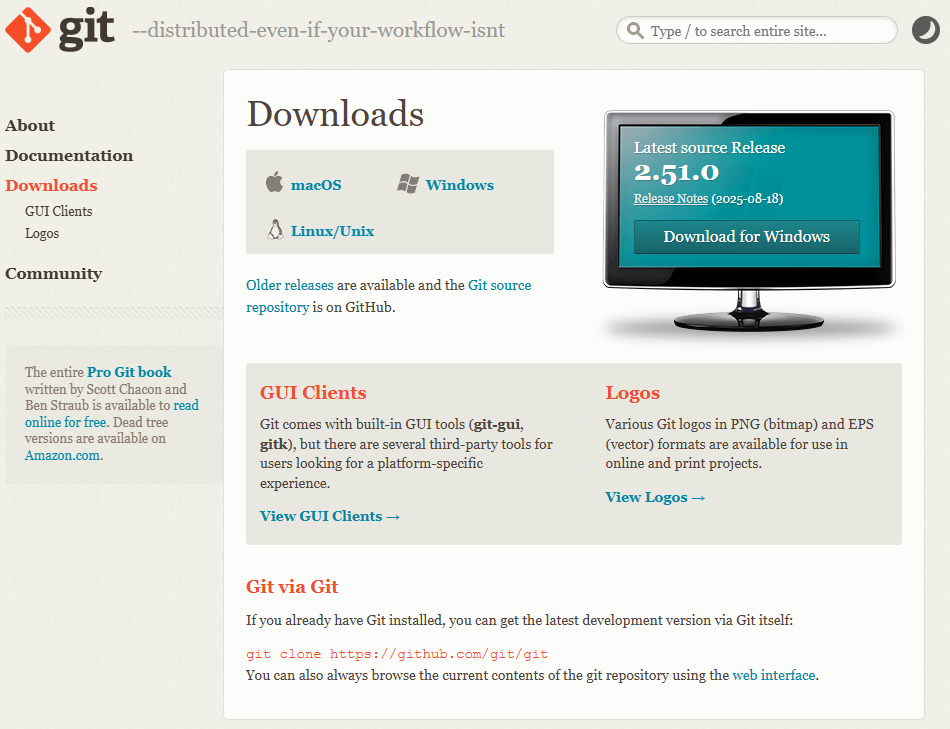
3. Instalação do Git - Por sistema operacional
Windows: execute o instalador baixado com as opções padrão.
macOS:
Linux (Ubuntu/Debian):
4. Configuração do Git no RStudio
A configuração precisa ser feita uma única vez por computador. Use o pacote {usethis} para definir as informações globais:
# usethis::use_git_config(
# user.name = "seu_nome_de_usuario",
# user.email = "seu_email@exemplo.com")Caution
O e-mail deve ser obrigatoriamente o mesmo cadastrado na conta GitHub.
5. Configuração do GitHub no RStudio - PAT
Para que os comandos do R acessem sua conta no GitHub, é necessário criar um Personal Access Token (PAT).
Após logar no GitHub, acesse:
Settings > Developer settings > Personal access tokens > Tokens (classic) > Generate new token
Descreva o uso do token, selecione os escopos necessários, gere e copie a sequência de caracteres gerada.
5. PAT - Passo 1
Acesse o menu da sua foto na lateral direita e selecione Settings.
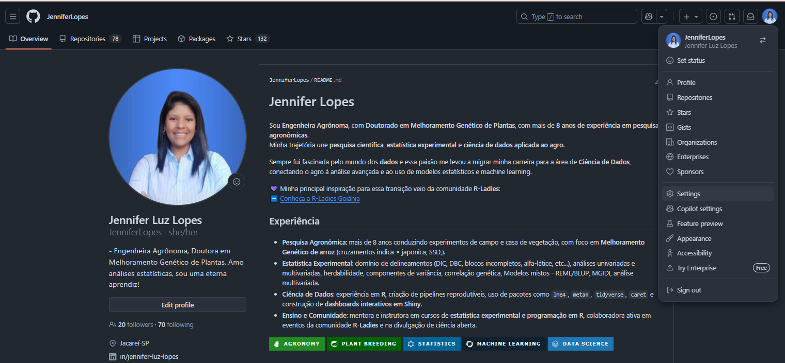
5. PAT - Passo 2
No menu lateral esquerdo, ao final, selecione Developer settings.
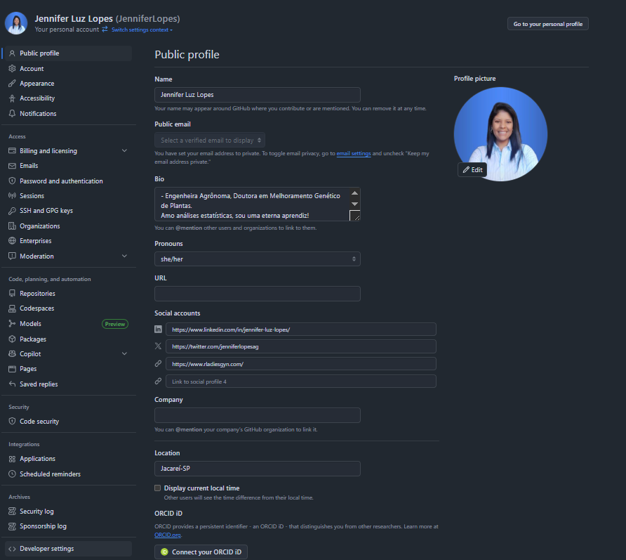
5. PAT - Passos 3 e 4
Selecione Personal access tokens > Tokens (classic) e, no menu superior direito, Generate new token (classic).
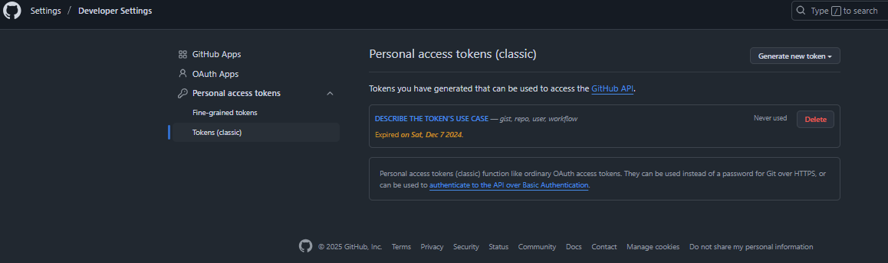
5. PAT - Passos 3 e 4
Selecione Personal access tokens > Tokens (classic) e, no menu superior direito, Generate new token (classic).
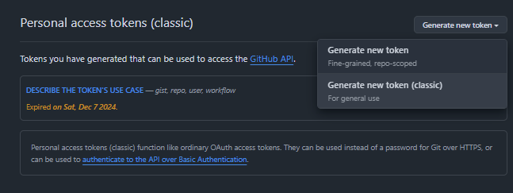
5. PAT - Passo 5
Personalize com o nome do token e marque as opções necessárias (mínimo: repo e workflow).
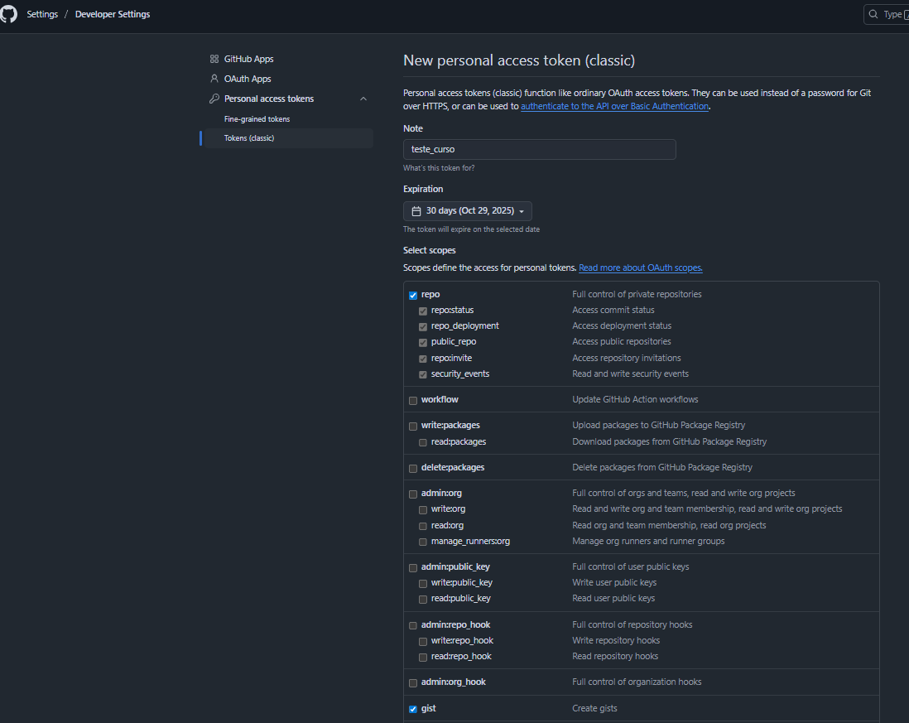
5. PAT - Passo 6 e 7
Clique em Generate token. O token será exibido apenas uma vez - copie-o imediatamente.
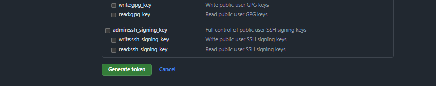
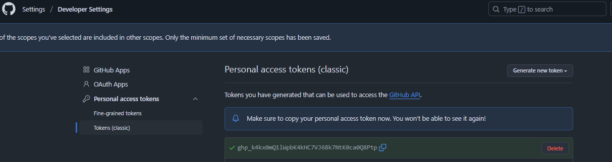
5. PAT - Passo 8
Com o token copiado, retorne ao RStudio para registrá-lo.
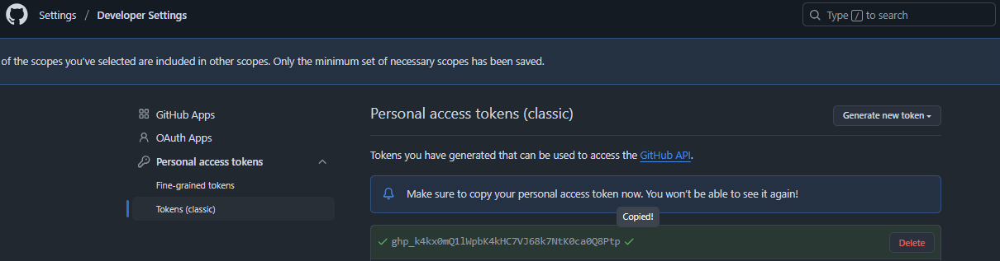
5. PAT - Registrando no RStudio
Opção automática - gera e abre a página do GitHub diretamente:
Registrando manualmente - abre o arquivo .Renviron:
.Renviron: arquivo que guarda informações sensíveis como tokens, senhas e chaves de API - fora do código versionado.
5. PAT - Passo 9
No arquivo .Renviron que se abrir, adicione a linha abaixo, pule uma linha e salve.
GITHUB_PAT=COLE_SEU_TOKEN_AQUI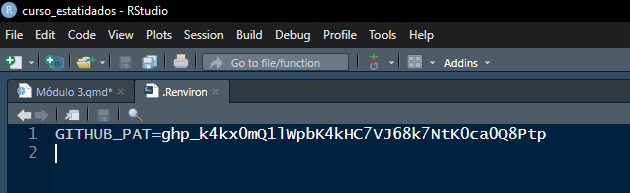
5. PAT - Passo 10
Salve o arquivo e reinicie o RStudio com CTRL + SHIFT + F10.
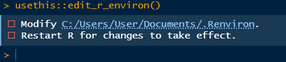
Após esse passo, nenhuma outra configuração de autenticação será necessária neste computador.
Módulo 3
Compartilhando e Versionando Projetos
Três métodos de integração
Existem três formas de conectar RStudio e GitHub:
Método 1 - Criar um repositório no GitHub e clonar no RStudio
Método 2 - Clonar um repositório existente do GitHub no RStudio
Método 3 - Criar um repositório novo diretamente do RStudio
Método 1 - Criando o repositório no GitHub
Antes de clonar um repositório no RStudio, é necessário que ele exista no GitHub.
Passo 1: Acesse https://github.com e faça login.
Passo 2: Clique no botão “+” no canto superior direito e selecione “New repository”.
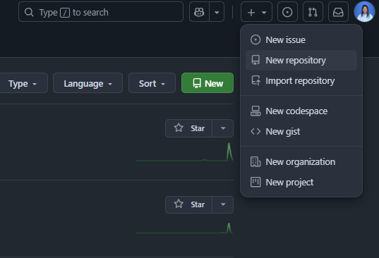
Método 1 - Configurando o repositório
| Campo | Descrição |
|---|---|
| Repository name | Nome curto e claro (ex: meu_projeto) |
| Description | Breve descrição do propósito do projeto |
| Visibility | Public (qualquer um pode ver) ou Private |
Método 1 - Configurando o repositório
| Campo | Descrição |
|---|---|
| Add a README file | Marque para iniciar com um arquivo base |
| .gitignore | Pode ser deixado desmarcado neste momento |
| Choose a license | Pode ser adicionado posteriormente |
Método 1 - Criando o repositório
Preencha os campos e clique em “Create repository”.
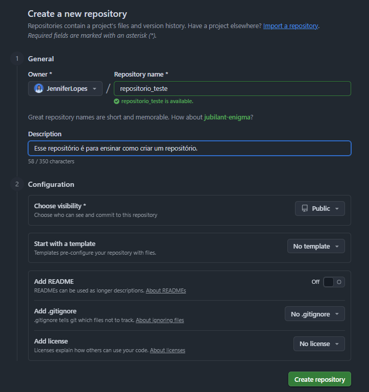
Método 1 - Repositório criado
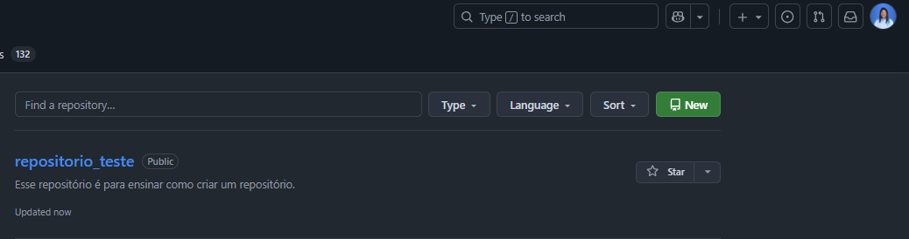
Método 1 - Repositório aberto
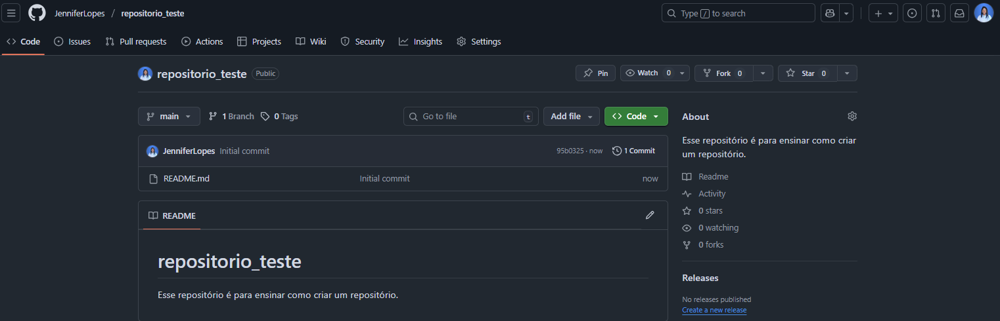
Método 2 - Clonando um repositório existente
Este método é utilizado quando o repositório já existe no GitHub e você deseja trabalhar com ele localmente no RStudio.
Passo 1: Acesse o repositório no GitHub.
Passo 2: Clique em “<> Code” e copie o link HTTPS.
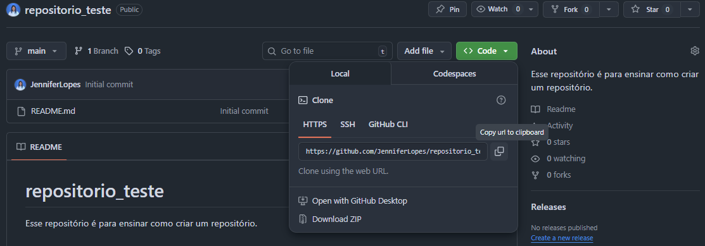
Método 2 - Configurando o projeto no RStudio
No RStudio: File > New Project > Version Control
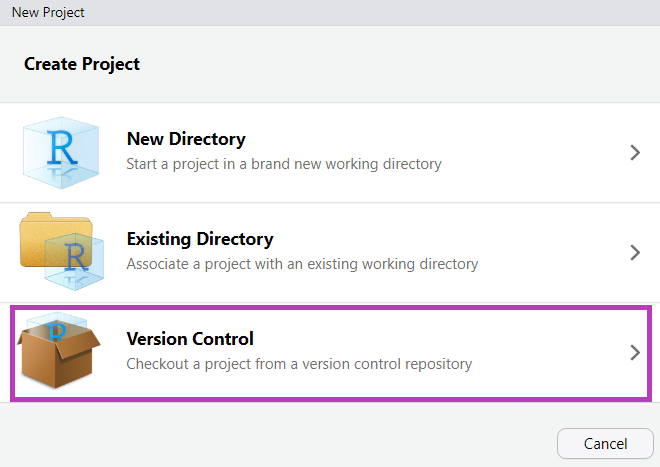
Método 2 - Selecionando Git
Na aba “Create Project from Version Control”, selecione Git.
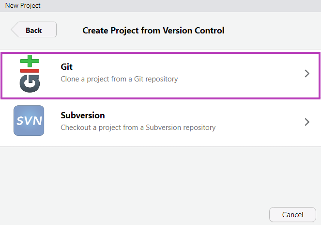
Método 2 - Preenchendo os dados
Na aba “Clone Git Repository”:
- Repository URL: cole o link copiado do GitHub
- Project directory name: preenchido automaticamente
- Create project as subdirectory of: escolha o diretório local
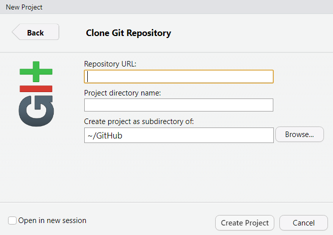
O RStudio clona o repositório e cria um .Rproj automaticamente.
Método 3 - Criando direto do RStudio
Ideal para iniciar um novo projeto em R com controle de versão desde o início e publicá-lo no GitHub.
No RStudio: File > New Project > New Directory > New Project
Nomeie o projeto, escolha o local e marque “Create a git repository”.

Método 3 - Ativando o Git
Com o projeto aberto, ative o Git com o pacote {usethis}:
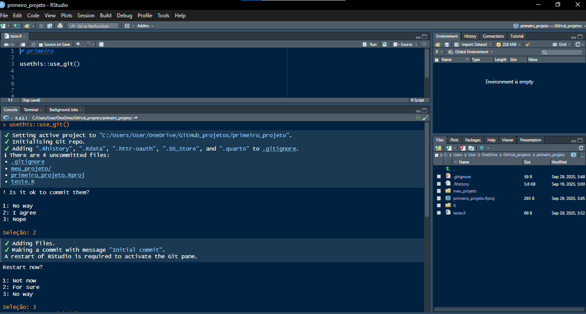
Método 3 - Publicando no GitHub
Em seguida, publique o projeto diretamente no GitHub:
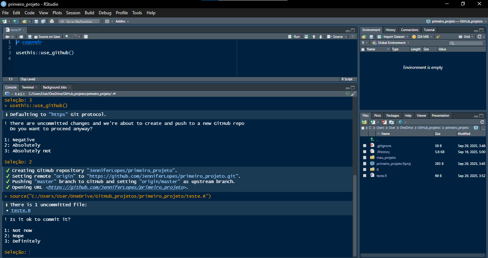
Método 3 - Repositório criado no GitHub
O repositório é criado automaticamente e fica disponível no GitHub.
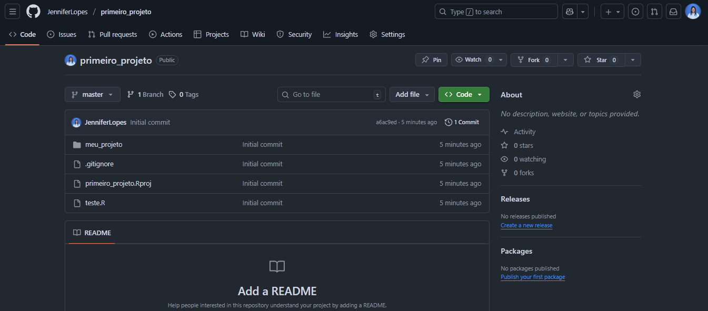
Módulo 4
Fluxo de Trabalho com Git no RStudio
Versionamento de código no RStudio
O RStudio oferece uma interface gráfica integrada ao Git que facilita o versionamento de arquivos sem o uso do terminal.
Essa funcionalidade pode ser ativada em projetos existentes por meio do caminho:
Tools > Project Options > Git/SVN
Configurações do painel Git/SVN
Enable version control interface for RStudio projects
- Quando marcado, ativa a aba Git dentro do RStudio sempre que você abrir um projeto versionado. É por essa aba que você vai executar commit, push, pull, visualizar diferenças e gerenciar arquivos.
Sign git commits
- Permite assinar commits com uma chave GPG - recurso avançado, usado em ambientes de segurança. Para uso padrão, pode ser deixado desmarcado.
Configurações do painel Git/SVN
Git executable
- Indica o caminho do executável do Git no computador (ex:
C:/Program Files/Git/bin/git.exe). Se estiver vazio, clique em Browse e localize manualmente.
SSH key
- Mostra se existe uma chave SSH configurada - alternativa ao uso de token via
.Renvironpara autenticar com o GitHub.
O Painel Git no RStudio
Após ativar o Git, o painel aparece no canto superior direito do RStudio.
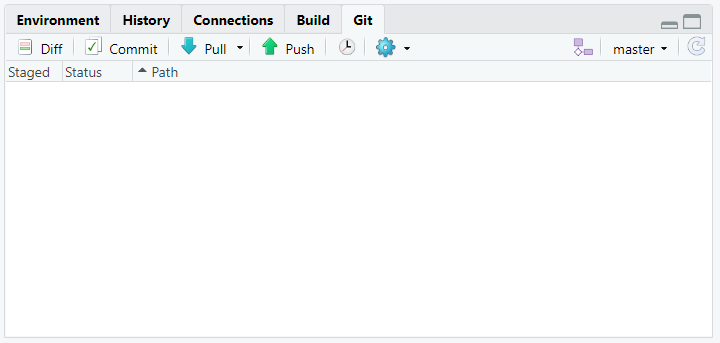
Elementos do Painel Git - Parte 1
| Elemento | Função |
|---|---|
| Staged | Checkbox para selecionar arquivos para o commit |
| Status | M (modificado), A (adicionado), D (deletado), ? (não rastreado) |
| Diff | Visualiza as alterações linha por linha |
Elementos do Painel Git - Parte 2
| Elemento | Função |
|---|---|
| Commit | Abre a janela para registrar o commit |
| Pull | Baixa commits do repositório remoto |
| Push | Envia commits para o GitHub |
Elementos do Painel Git - Parte 3
| Elemento | Função |
|---|---|
| History | Exibe o histórico visual de commits |
| Branch | Lista e permite criar branches |
| More | Opções avançadas e acesso ao terminal Git |
Conceitos importantes - Commit
Um commit é como tirar uma fotografia do estado atual do projeto. Ele registra uma versão dos arquivos naquele momento, com uma mensagem descritiva que explica o que foi feito.
- Cada commit tem um identificador único
- É possível voltar a qualquer versão anterior com base nos commits
- Um commit é local - ainda não está no GitHub
Conceitos importantes - Push
O push envia os commits locais para o repositório remoto no GitHub.
- É como sincronizar o projeto local com o servidor
- Outros colaboradores só terão acesso ao seu trabalho após o push
- Necessário ter o repositório remoto configurado corretamente
Commit salva localmente. Push envia ao GitHub.
Conceitos importantes - Pull
O pull baixa as alterações do repositório remoto para a máquina local.
- Deve ser executado antes de começar a trabalhar, garantindo que você está na versão mais atualizada
- Evita conflitos e sobreposição de alterações feitas por outras pessoas
Pense no pull como: quero as atualizações do meu time antes de começar a editar.
Conceitos importantes - Stage
Antes de fazer um commit, os arquivos precisam ser adicionados à staging area (área de preparação).
- Permite selecionar quais arquivos farão parte do próximo commit
- Você pode preparar apenas parte das alterações antes de salvar definitivamente
- No RStudio, isso é feito marcando o checkbox ao lado do arquivo na aba Git
Conceitos importantes - Repositório
Um repositório é o local onde o histórico completo do projeto é armazenado, incluindo todos os commits, arquivos e ramificações.
- Pode ser local (na sua máquina) ou remoto (no GitHub)
- Contém toda a evolução do projeto, permitindo rastrear e comparar versões ao longo do tempo
Conceitos importantes - Branch
Uma branch (ramificação) permite trabalhar em uma nova funcionalidade ou correção sem afetar o código principal.
- A branch principal normalmente se chama
mainoumaster - Outras branches podem ser criadas para testar ideias ou desenvolver recursos
- Após o trabalho concluído, as alterações podem ser integradas à
mainpor meio de um merge
Folha de dicas - Interface Git no RStudio
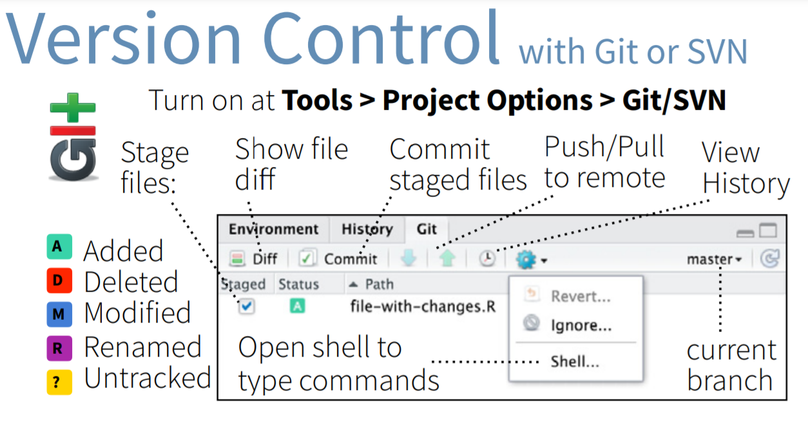
Primeiro commit - Passo 1
Após criar o projeto com Git ativo, vá até a aba Git no RStudio. Você verá os arquivos com o símbolo
?(untracked), indicando que ainda não estão versionados.Marque o checkbox ao lado dos arquivos que deseja incluir - isso é chamado de adicionar ao stage.
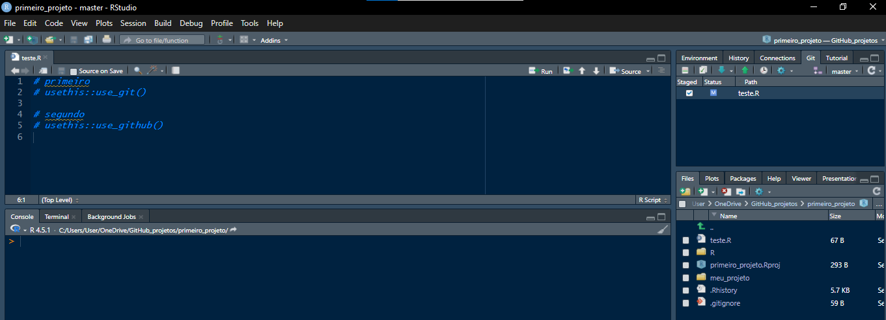
Primeiro commit - Passo 2
Clique em Diff para comparar o conteúdo atual dos arquivos com o que está salvo. Linhas em verde foram adicionadas; linhas em vermelho foram removidas.
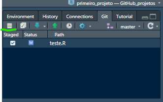
Primeiro commit - Passo 3
Clique em Commit. Uma nova janela será aberta. No campo de mensagem, insira um texto descritivo sobre o que foi feito.
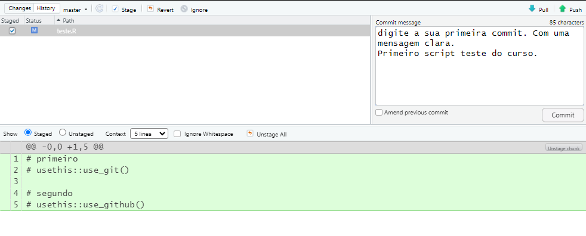
Primeiro commit - Passo 4
Clique em Commit para confirmar. Uma janela de log será exibida indicando que o commit foi realizado com sucesso.
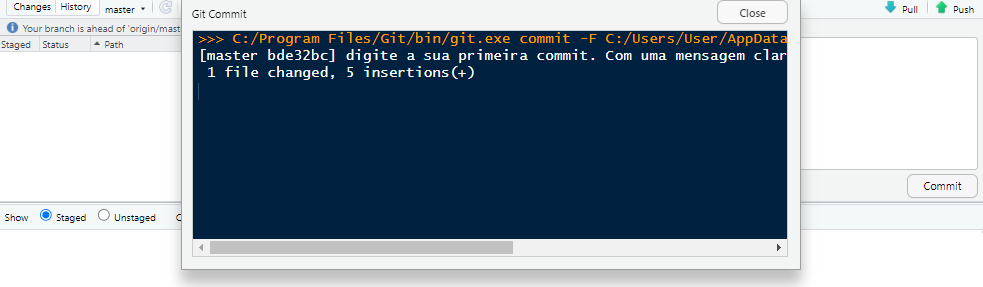
Primeiro commit - Passo 5
Clique em Push (seta para cima) para enviar as alterações ao repositório no GitHub.
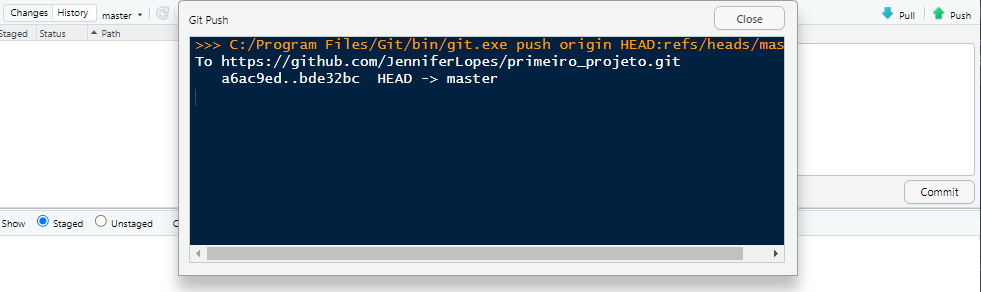
Primeiro commit - Passo 6
Abra o repositório no GitHub e confira as alterações. O arquivo enviado aparecerá com a mensagem de commit registrada.
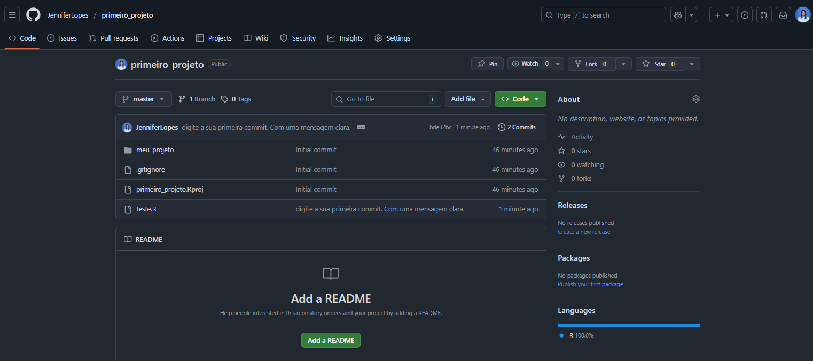
Boas práticas - Mensagens de commit
Mensagens corretas:
Adiciona função de limpeza de dados ausentes
Corrige bug no cálculo de média ponderada
Refatora script de visualização por regiãoMensagens incorretas:
Update
Correções
asdf
MudançasBoas práticas - Estrutura recomendada
tipo: descrição curta (até 50 caracteres)
Descrição detalhada do que foi feito e por que.
Pode conter múltiplas linhas quando necessário.Tipos comuns: feat (nova funcionalidade), fix (correção), docs (documentação), refactor (refatoração), test (testes)
Boas práticas - Arquivo .gitignore
O .gitignore define quais arquivos o Git deve ignorar. O RStudio cria automaticamente com padrões R:
.Rproj.user
.Rhistory
.RData
.RuserdataBoas práticas - Customizando o .gitignore
Adicione conforme a necessidade do projeto:
# Dados sensíveis
dados_privados/
.Renviron
# Arquivos grandes
*.zip
*.rds
# Outputs gerados automaticamente
outputs/
figures/Segurança - O que nunca versionar
Nunca inclua no repositório:
- Senhas e tokens de API
- Arquivos
.Renvironcom credenciais - Dados pessoais ou sensíveis
- Chaves privadas (
.pem,.key)
Segurança - Variáveis de ambiente
# ERRADO: credencial exposta no código
api_key <- "abc123xyz456"
# CORRETO: credencial em variável de ambiente
api_key <- Sys.getenv("API_KEY")Armazene no .Renviron (nunca versionado):
API_KEY=abc123xyz456
GITHUB_PAT=ghp_seu_token_aquiErros comuns - Parte 1
| Erro | Causa | Solução |
|---|---|---|
Permission denied |
PAT não configurado | usethis::edit_r_environ() |
Updates were rejected |
Repositório remoto à frente do local | git pull antes do push |
Nothing to commit |
Arquivos não adicionados ao staging | Marcar checkbox na aba Git |
Erros comuns - Parte 2
| Erro | Causa | Solução |
|---|---|---|
Detached HEAD |
Checkout em commit específico | Voltar para main no dropdown |
Merge conflict |
Duas alterações na mesma linha | Resolver manualmente no editor |
Repository not found |
URL incorreta ou sem acesso | Verificar URL e permissões |
Fluxo de trabalho diário recomendado
Antes de começar:
- Abra o projeto no RStudio (
File > Open Project) - Execute Pull para baixar atualizações do GitHub
Durante o trabalho:
- Edite e salve os arquivos normalmente
- Realize commits com frequência e em unidades lógicas
Fluxo de trabalho diário recomendado
Ao encerrar:
- Revise as alterações no painel Git
- Escreva mensagem descritiva, execute commit e push
Referências técnicas
- Happy Git and GitHub for the useR: https://happygitwithr.com - referência essencial para usuários R
- Pro Git Book: https://git-scm.com/book - documentação completa e gratuita
- GitHub Docs: https://docs.github.com - documentação oficial
- usethis: https://usethis.r-lib.org - automação de workflows R com Git
Pratique agora
Crie seu repositório, faça seu primeiro commit e publique no GitHub.
Acompanhe o Café com R
EM BREVE - NO YOUTUBE
Inscreva-se já no Link.

Jennifer Lopes | Café com R| Git e GitHub no RStudio